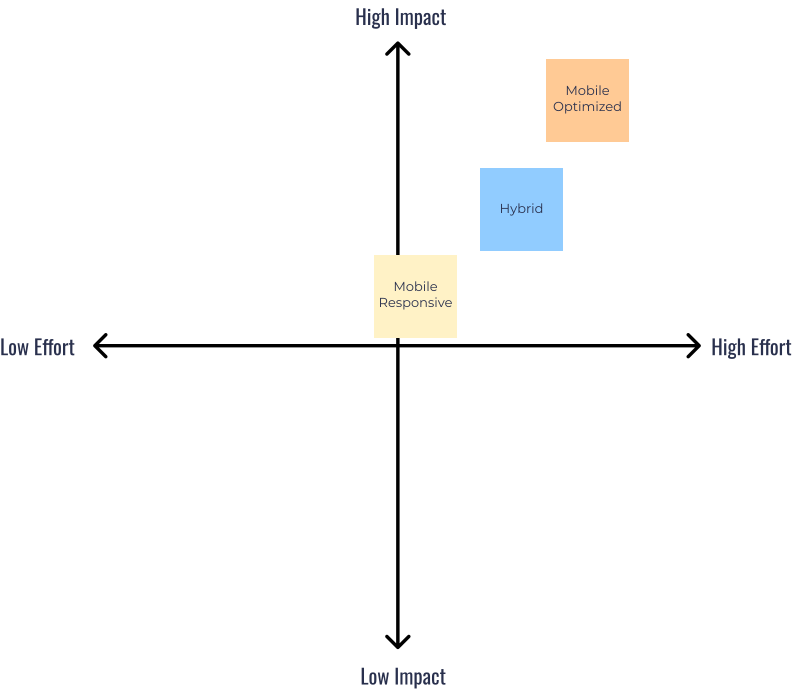

Pro Xtra Management Portal
Enhancing the Pro Xtra Loyalty Account Management System
Overview
I drove user-centered design strategies for Pro Xtra, the company's premier B2B loyalty program serving over 14 million professional customers—our most valuable customer segment. The internal tool that manages this program is called ProXtra Management Portal, or PXMP, for short. Although this tool test very well for it’s usability, it’s currently only available on desktop. This has led to low CSAT scores, Increases in customer support tickets, and negative associate feedback. My job, and the ultimate goal for this tool was to make it mobile responsive to allow more in-store associates to use it. That way more customers can be assisted in a timely fashion, and to push the new business goal of expanding the consumer base primarily B2B to include B2C.
Challenge
The challenge was determining the best approach to transition PXMP to mobile, while considering the contrainsts with resources, refocusing target users, and the potential expansion of the customer base. The resources are referring to Home Depot’s two design systems: ANT Design and MUI Design, each with there specific purpose for building applications. There are 5 different user groups that use PXMP, but this transition shifts focus to primarily in-store associates. Lastly, expanding the customer base will greatly change the process in how PXMP is used.
Solution
From my initial research into the users, the current resources, and the previously finished research we deterimined that the best approach would be a mobile optimized app instead of trying to make PXMP mobile responsive. This ensure that the in-store associates will have the most streamlined and intuitive experience while troubleshooting customer issues. Also considering how the current design systems are used by the engineers, and the flood of new associates using the tool I believe this would be best approach. Through this I provide vision and strategy for PXMP. Other big contributions were the collaboration and stakeholder align.
Role
Senior UX Designer
Team
- 2 Product Manager
- 1 Senior UX Designer
- 1 UX Designer
- 2 Software Engineers
Tools
- Figma
- Miro
- New Relic
Timeline
2 Months | 2024
Verifying the Problem
When I joined the team, I was told PXMP needed to be made mobile-responsive using components. At that point the problem seemed simple, how to make this tool transition to mobile. However, one of my first few tasks was to determine which components needed redesigning, which confused me. Given that they used ANT Design and MUI Design—both well-documented and sophisticated systems, I wondered why redesigns were necessary. Perhaps they meant redesigning patterns instead, which were the combinations of different components.
Seeking clarity, I spoke with other designers but got no clear answers since the lead designer who was over the program was on leave. I then reached out to the engineers on slack and had a quick meeting on there since that was there favorite way to interact. When i came to components they shared my thoughts—they opposed custom components and there was no need to redesign them because of the newly acquired design systems. However, they also noted that making PXMP responsive would be challenging, as ANT Design wasn’t made for mobile use cases.
During our next UX team meeting, I shared these insights and decided to meet with PMs and stakeholders. The goal was to align on goal, expectations, and also understanding about components. The meeting first started by me asking questions about they’re understanding of components, so that when I relayed what I learned from the engineers, It would be easier to get on the same page. It helps when all parties of a discussion feel heard and more involved rather than a supposed expert lecturing them. After that I learned about their goals and expectations for the project.
Their biggest concern was all the request from other departments and associates for a mobile version of PXMP. They assured me this is a long term project and that they wanted Q1 to focus mainly on discovery. This led to the first major pivot: instead of redesigning components, our focus shifted to determining the best way to transition PXMP to a mobile responsive design given the constraints.
User Research
After meeting with the PMs to make sure we were on the same page with the components, I wanted to go over any and all of the existing research. The goal was to get a better understanding of the new target users, PXMP, and the design systems so that we could determine the gaps in our knowledge. It turns out that there had been quite a bit of research done on the already. Here’s a breakdown of the user research we started with:
The main problem that interrupts the in-store associates workflow is having to contact the call center to make edits to customer accounts because their permissions are limited. Another big issues for pro associates is the fact that they are multi-tasking and having to go back and forth from the desktop to the aisles helping customers. They also have sales and sign-up targets on their minds. Having PXMP on mobile with give them more flexibility when assisting customers because they could at least stay out on the floor and complete task in a single location.
Application Audit
While we continued learning more about our users and their pain points, we also made time to study PXMP as is, and gain a deeper understanding of it’s usability. A great source of valuable information was the System Usability Scale(SUS) that was available from previous research. That way we can brainstorm how a mobile transition will affect it’s features and functionality. Here are some important points from the SUS score.
Despite the many request to update the internal tool to fit mobile devices, that wasn’t an implication that PXMP didn’t perform well with users. In fact, with a score of 89.05, it performs amazingly well! This indicates that larger, more systematic factors are at play when it comes to making this tool more effective.
Design Systems
Normally the biggest constraints designers face are time and budget. However, I also like to fully grasp the resources involved. In this case I mean the engineers and the design systems we’re working with. ANT Design is an enterprise level design system made for handling large data heavy designs on desktop. Despite it also having a version for mobile, however, that version wasn’t available here. Instead, Home Depot uses two different systems, one for desktop(ANT Design), and one for mobile(MUI Design).
A mobile responsive approach to this transition is usually the simplest and easiest way to transition a desktop website or application to mobile. That goes for all parties involved. However, in this case, using two different systems leaves more room for errors and inconsistencies. At this point I was having serious doubts about the responsive approach, and that would eventually lead to the second pivot point. Which was determining the best approach for this transition: mobile responsive, mobile-optimized, or a hybrid option.
Analytics
Throughout this time of gaining a better understanding of our research and the pivots that came with it. There was a pleasant constant that kept everything aligned. That was the fact that this tool would still need to be redesigned for mobile devices. That meant we would need to prioritize the information and content to determine how to best use our limited screen size. A big task would be to redesign the large data heavy tables within PXMP. Using an analytic tool called New Relic, allowed us to see the numbers about how this tool is being used in real time.
New Relic is a cloud-based software platform that helps businesses monitor, debug, and improve their applications and infrastructure. Here we used this tool to inform us on the most visited pages and tabs within PXMP. It also gave us an insight into the ways users look up customer information. Shown in the images below we can see that the purchase history tab is the most popular, and that customer accounts are found mainly with their phone numbers
Contract Ended Early
Unfortunately because of budget cuts and other factor myself, along with many other contractors were notified that our time at Home Depot would be ending sooner that expected. I really enjoyed my brief time there and the people I worked with. The rest of this case study will highlight some of my would be next steps as well as the future state I envisioned.
Consolidating heavy data components
As I’ve pointed out before, transitioning data heavy elements and complex visuals to fit mobile screens sizes is one of the biggest task. The way to solve this issue is through prioritizing the information that’s most essential to the user and their workflow. We learned from New Relic that purchase history is one of the most frequent tabs that our users navigate too. For example, looking up old purchases to verify receipts from rewards. Understanding the why behind these different workflows are key to understanding what information we should prioritize.
In the example above, so much information is clearly visible, and added features like filtering help find specific items faster. On a mobile device the visibility will decrease drastically, which can increase the time it takes to complete task. This is the reason I would not only take qualitative research approaches to understanding how users complete task, but quantitative approaches to learn what aspects of the task we should focus on. I would use Tree Testing and Card Sorting methods to get a complete picture of their terminology, grouping structures, and informational hierarchies.
Design Approach
An important step in completing this project would be to make the case for which mobile design approach I believed was best and present that decision to the stake holder. Some key questions in making that decision are as followed:
User Needs:
- Are mobile users performing the same tasks as desktop users, or do they have different workflows?
- Will they access the mobile version through their personal mobile devices.
- Is there a bigger learning curve that will happen with the expansion of the customer base?
Complexity:
- Can PXMP’s interactions scale down smoothly, or do they require rethinking?
- How will touch interactions affect their normal troubleshooting workflows?
- Is there multi-tasking involved?
Development Effort:
- How much time and resources are available for this transition?
- Which approach would be the toughest to maintain from an engineering perspective?
- What would make the most sense with the tools at our disposal?
Impact-Effort Matrix
I believe the best approach would be to make PXMP mobile-optimized rather than mobile responsive. Although my opinion should be looked into further and discussed more, this is the direction I’m leaning too. Considering the current long term goals, the complexity of the workflows, user needs, and engineering resources the pros out weigh the cons. There isn’t an immediate press for time, and given the fact that more associates will use the tool, it would be wise to have an internal tool that is intuitive and streamlined. If PXMP is made responsive as is, the mobile experience will be clunky and full of friction. Add that to the quick timeouts that associates experience will only slow the process down further. This will only lead to more frustration and more negative feedback for the associates.
Future State
As stated earlier in this case study, editing power is a crucial factor in evolving how PXMP affects it’s consumer base. One reason as to why it’s complicated to change the editing ability of different users is because the current customers are B2B. Meaning when someone walks in needing help, they are doing so on behalf of a company or business. This of course would be a bigger liability to allow that person to change primary account information. However, with the expanded customer base being B2C, those customers would have potentially less complicated accounts. Thus decreasing the liability when make changes to those accounts.